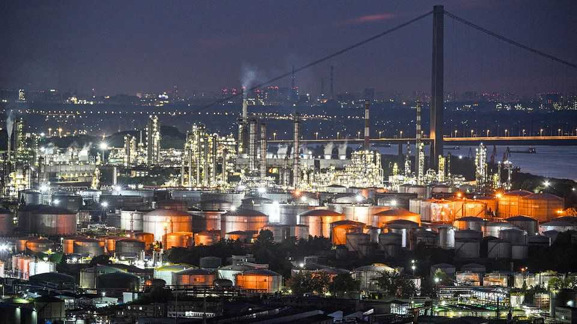
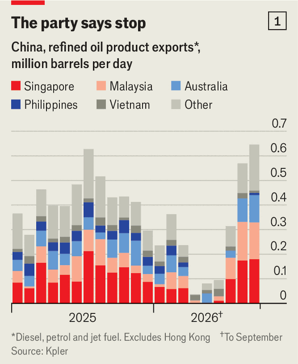
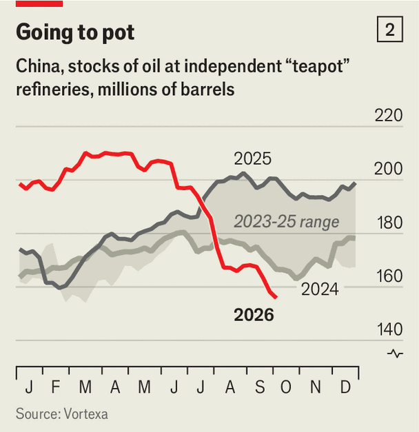
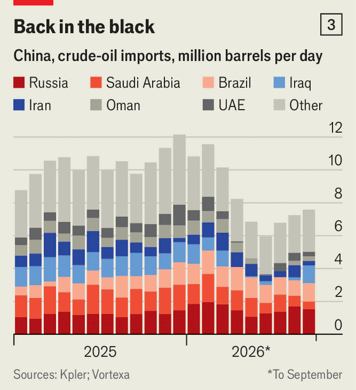

China’s oil tactics have been clever. Now the costs are mounting
The choices it faces will have global repercussions

Oct 8th 2026
WHEN THEY met in Washington, on September 24th, Donald Trump urged his Chinese counterpart, Xi Jinping, to boost China’s fuel exports to ease a global shortage of diesel. A week later came China’s answer: an immediate, open-ended freeze on all fuel-export licences. The decision looked like a snub. It was certainly a sign that China’s energy system is under more strain than it lets on.
Until recently China, once the number-one buyer of Gulf oil, had ridden out the Hormuz crisis with impressive agility. Between April and June the country reduced its imports of crude by half, to 6m barrels a day (b/d), helping to stabilise global oil prices without causing a domestic recession. Having spent years building petroleum stockpiles, Chinese officials felt vindicated. They rolled back a fuel-export ban first imposed in March, allowing diesel exports to hit four-year highs in September. Now they are hitting the brakes again.
To work out why, look under the bonnet of China’s notoriously opaque oil-buying machine. The country keeps its oil stocks and procurement strategy secret. But our research suggests that its command-and-control approach is having side effects that the government can no longer ignore. Whatever it does next will affect how hard the oil shock bites this winter—in China and around the world.

China’s oil-buying behaviour reflects a constant tug-of-war between the Communist Party’s obsession with energy security and the commercial interests of the state-owned majors, which are the only oil firms, bar Rongsheng, a private refiner, that have export quotas. At the start of the war the party prevailed. Anxious to preserve domestic supplies, the government told oil firms to halt all shipments of petrol, diesel and jet fuel, bar those going to Hong Kong and Macau (see chart 1). Exports cratered.
As their storage tanks filled up, the majors began processing less oil, reducing their demand for crude. Instead of adding to their stockpiles of crude, as they had been doing for years, they started drawing them down a little. Meanwhile fuel demand fell, as high prices pushed motorists to use taxis (many are electric in China) or public transport. Crude imports plunged.
By June the government felt reassured. America and Iran had signed a deal, which allowed some crude through the Strait of Hormuz and pushed Brent, the global benchmark, down to $72 a barrel (it had averaged $104 in May). But refined-product prices stayed high: Gulf fuel exports remained limited and Russia’s, amid Ukrainian strikes on the country’s refineries, had sunk too. Chinese exporters saw a chance to make big profits. “The government came under huge pressure to lift the ban,” says a trading boss.
In July the government obliged, on condition that the majors’ fuel stocks stayed above the high levels of February, before the start of the war. The country’s economic-planning agency audits those inventories around the 20th of each month. If satisfied, it lets oil firms seek export licences from the Ministry of Commerce.

These rules have allowed for a surge in exports of refined products. But they have also warped the majors’ behaviour. To be eligible for export licences they have rushed to build up stocks of refined products, buying huge volumes of fuel from China’s “teapots”—smaller independent refiners clustered on the eastern coast, notes Michal Meidan of the Oxford Institute for Energy Studies, a think-tank (see chart 2).
Aware that an export ban could return with little warning, the majors also rushed to secure as much raw material as they could on global markets (see chart 3). The scramble for crude intensified last month, when a worsening fuel crunch worldwide pushed exporters’ dollar-profit per barrel of diesel into triple digits. Chinese refiners usually buy crude four months in advance. In September they placed orders for delivery within four weeks. To help pay for those purchases, they also resold crude cargoes they were due to receive in December—in effect swapping future deliveries of crude for oil they could process immediately.

The scale of those transactions has distorted international markets. Even though more oil is slipping through Hormuz, China’s appetite has helped bring Brent back to $100 a barrel. Brent crude for immediate dispatch now costs about $25 a barrel more than Brent for delivery in a few weeks’ time. Gulf crude, China’s favoured variety, also trades at a big premium. Tanker-charter rates are hitting records: it now costs a whopping $36 to ferry a barrel of Omani crude to China. It was $1.50 per barrel at the beginning of the year.
That is creating headaches for the country’s leaders. As refiners’ input costs have soared, so have wholesale fuel prices in China. But retail prices, which the government controls, have risen less sharply; in some regions they are even lower than wholesale costs. That makes the majors reluctant to produce for the home market.
Meanwhile China’s fuel stocks are disappearing fast. They have already shrunk by 65m barrels since the start of the war, to perhaps 300m. Much of what remains is “dead” stock, kept solely to meet the export-licence threshold. Argus Media, a price-reporting agency, reckons state firms’ fuel inventories were 2% below February levels at the end of September. And the majors have no easy way to bump up their stocks, because the teapots are under stress. They used to buy most of their crude, covertly and at a discount, from Iran and Venezuela, but Iran, blockaded by America, cannot export any more and Venezuela’s crude, no longer subject to American sanctions, has become too expensive for them.
The wholesale crunch has affected China’s retail markets. Squeezed by rising costs, some stations now make customers buy cigarettes to get any diesel, the scarcest of all fuels. The prospect of further pain at the pump explains why the government stopped issuing licences on October 1st, the start of a “golden week” national holiday (see next story), when fuel demand often surges. It is unclear when the freeze will end.
Companies applied for so many licences in September that they retain unused ones. But China’s fuel exports are still projected to fall by 40% in October, squeezing international markets further. (In September, for diesel, petrol and jet fuel, China accounted for 8% of global exports.) China’s oilmen will feel the pinch too. They must find replacement cargoes for those they promised to deliver and which can no longer get out. Tom Reed of Argus Media calculates that, on a typical diesel shipment, a Chinese major would go from making a $20m profit to a $10m loss if it had to buy the missing fuel on the open market.
For China’s product stocks to recover two things must happen. First, the government needs to let retail prices rise further, so refiners produce more for the domestic market. But prices are already uncomfortably high for many consumers. Alternatively, it could force the majors to sell at a loss or at subsidised rates—at a cost to the state, their main shareholder.
Second, China’s mega-refiners have to find more crude to process. The export ban frees up some supplies for the domestic market, but these may not suffice. Premasish Das of S&P Global, a data firm, estimates China needs to import 9.5m-10m b/d of oil to stabilise its supply of refined products without raiding its own stocks of crude. That would be 2m b/d more than it bought in last month. Without peace in the Gulf, that could cause crude prices to rocket, especially as China must now use the open market to replace another 2m b/d of lost Iranian and Venezuelan supplies.
Failing that, China must further reduce its giant stockpile of crude, which it has done only modestly so far. The reserve has shrunk by less than 1m b/d on average since May, to 1.1bn barrels—roughly 100 days’ worth of pre-war imports. With no end in sight to the Iran war, the government is reluctant to let its strategic buffer fall further. But it is becoming harder for China to avoid a choice between dearer fuel, a costlier subsidy and a thinner safety net.■
Subscribers can sign up to Drum Tower, our new weekly newsletter, to understand what the world makes of China—and what China makes of the world.